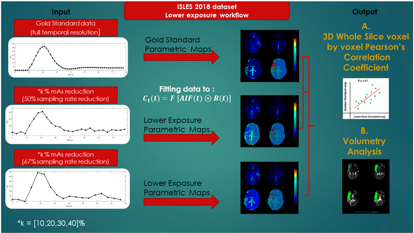
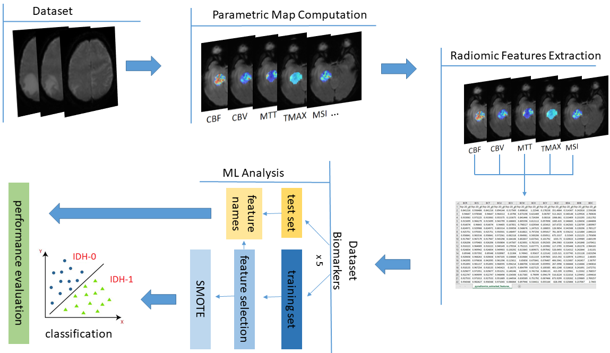
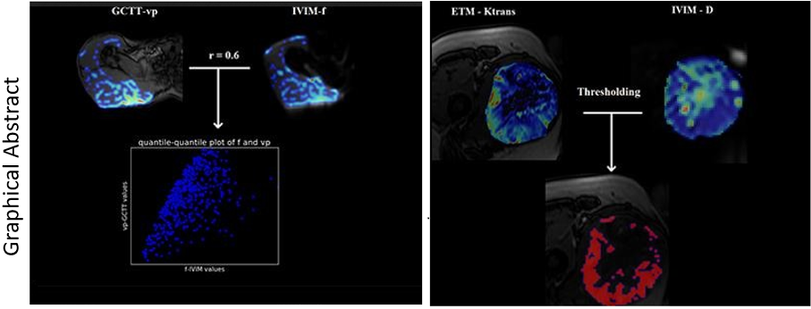

Research Highlights
Cerebral CT Perfusion in Acute Stroke: The Effect of Lowering the Tube Load and Sampling Rate on the Reproducibility of Parametric Maps
DSC Biomarkers for IDH Prediction in Gliomas
Statistical and spatial correlation of aggressiveness between diffusion and perfusion MR imaging parametric maps in soft tissue sarcomas

The aim of this study was to define lower dose parameters (tube load and temporal sampling) for CT perfusion that still preserve the
diagnostic efficiency of the derived parametric maps. Ninety stroke CT examinations from four clinical sites with 1 s temporal sampling and
a range of tube loads (mAs) (100–180) were studied. Realistic CT noise was retrospectively added to simulate a CT perfusion protocol,
with a maximum reduction of 40% tube load (mAs) combined with increased sampling intervals (up to 3 s). Perfusion maps from the original
and simulated protocols were compared by: (a) similarity using a voxel-wise Pearson’s correlation coefficient r with in-house software;
(b) volumetric analysis of the infarcted and hypoperfused volumes using commercial software. Pearson’s r values varied for the different
perfusion metrics from 0.1 to 0.85. The mean slope of increase and cerebral blood volume present the highest r values, remaining consistently
above 0.7 for all protocol versions with 2 s sampling interval. Reduction of the sampling rate from 2 s to 1 s had only modest impacts on a
TMAX volume of 0.4 mL (IQR -1–3) (p = 0.04) and core volume of -1.1 mL (IQR -4–0) ( p < 0.001),
indicating dose savings of 50%, with no practical loss of diagnostic accuracy. The lowest possible dose protocol
was 2 s temporal sampling and a tube load of 100 mAs. The workflow of this work is depicted in the image below. The research
was conducted with the contribution of collaborators from the Stanford Neurological Clinic and the Artorg Center, from the University of Bern.
Click here to read more.
This study aims to assess the value of biomarker based radiomics to predict IDH mutation in gliomas. The patient cohort consists of 160 patients histopathological
y proven of primary glioma (WHO grades 2-4) from 3 different centers. To quantify the DSC perfusion signal two different mathematical modeling methods were used
(Gamma fitting, leakage correction algorithms) considering the assumptions about the compartments contributing in the blood flow between the extra-and intra vascular space.
The Mean slope of increase (MSI) and the K1 parameter of the bidirectional exchange model exhibited the highest performance with (ACC 74.3% AUROC 74.2%)
and (ACC 75% AUROC 70.5%) respectively. The proposed framework on DSC-MRI radiogenomics in gliomas has the potential of becoming a reliable diagnostic support
tool exploiting the mathematical modeling of the DSC signal to characterize IDH mutation status through a more reproducible and standardized signal analysis scheme
for facilitating clinical translation. In the next figure the overall workflow for the automated IDH classification is depicted.Click here to read more.


The purpose of this study was to examine the correlation of diffusion and perfusion quantitative MR parameters,
on patients with malignant soft tissue tumors. In addition, we investigated the spatial agreement of hallmarks of malignancy
as indicated by diffusion and perfusion biomarkers respectively. Nonlinear least squares were used for the quantification of the DWI and DCE
derived parameters for 25 patients of histologically proven soft tissue sarcoma scanned at a 1.5 T scanner. 4D data were analyzed by an in house
built software implemented in Python 3.5 resulting in voxel based parametric maps based on the IntraVoxel Incoherent Motion (IVIM), Extended Toft’s
(ETM) and Gamma Capillary Transit time (GCTT) models. The root mean squared error (RMSE) was also used for assessing the accuracy of the DCE fitting
models. A good Pearson’s correlation (r > 0.5) was found between micro-perfusion fraction (f-IVIM) and plasma volume (vp-GCTT). There was no
significant correlation between all other possible pairs of DCE and DWI derived parameters. Following thresholding the indicators of malignancy from
both imaging methods, the percentage of volume overlap between regions of high cellularity and high vascular permeability ranged from 6% to 30%.
In conclusion,a free correlation study among all DCE and DWI derived pairs of parameters, showed a linear relationship between f-IVIM and vp-GCTT in patients with soft tissue sarcomas.
DCE in conjunction with DWI MRI can provide useful information on sites of aggressive characteristics for guiding the pre-operative biopsy and for overall
treatment planning (red color region in the graphical abstract).
Click here to read more.